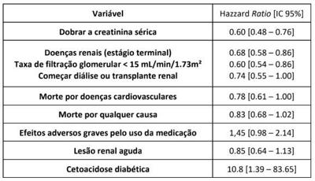
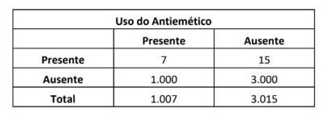
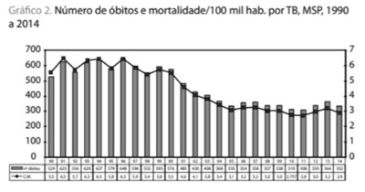
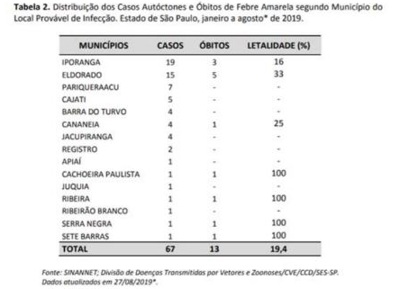
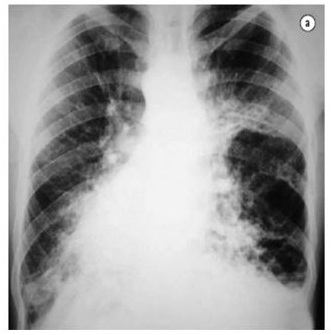
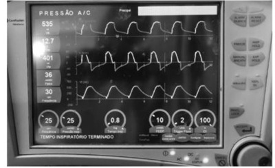
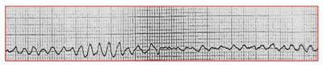
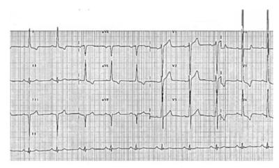

Uma paciente de 37 anos de idade foi ao consultório médico para controle de pressão. Refere que a avaliação para começar a academia estava alterada. Conta que está mais triste há cerca de três meses e associa a tristeza com a perda do marido (infarto fulminante). Sente-se mais desanimada e com falta de energia. Pelo cansaço, não tem vontade de sair de casa, saindo apenas para o trabalho. Apesar de estar com sono ao longo do dia, conta que dorme bem e não tem di culdade para iniciar o sono. Não teve ganho de peso nem se sente culpada, mas a memória e a concentração estão ruins como sempre. O médico perguntou-lhe sobre pensar em suicídio e a paciente respondeu que nunca pensou, mas que, há pelo menos seis meses, está com a pele mais ressecada e com o intestino mais preso. Ao exame físico, pressão arterial de 146 x 90 mmHg, IMC de 27 e demais exames dentro da normalidade. Ao exame psíquico: asseada; com contato fácil; colaborativa; consciente; com orientação alo e autopsíquica preservada; com humor deprimido; normomodulante; com pensamento não delirante, agregado e com curso normal; e não foi observada alteração de psicomotricidade, sensopercepção, memória ou atenção. Com base nesse caso hipotético, assinale a alternativa que apresenta, correta e respectivamente, o diagnóstico mais provável, o exame solicitado ou a conduta imediata e o tipo de prevenção indicado.
Os dados acima foram obtidos por meio de ensaio clínico, multicêntrico, com grande amostragem, de longa duração, randomizado e duplo-cego para avaliar o efeito da canaglifozina (inibidor do SGLT2), em comparação com o placebo, no tratamento do diabetes. Considerando que não houve erros metodológicos e que a randomização está adequada, assinale a alternativa que apresenta a interpretação correta dos resultados mostrados.

Uma paciente de 22 anos de idade, moradora de área livre, está com odor forte e incomodando os outros pacientes que aguardam o acolhimento da equipe. Faz uso frequente de álcool e crack e, desde os doze anos de idade, não faz acompanhamento em um posto de saúde. Está com tosse produtiva há quatro dias, mas foi à unidade por estar com dor de dente há doze horas. Com base nessa situação hipotética, assinale a alternativa correta.
Um paciente de 66 anos de idade foi à primeira consulta de enfermagem. Até então, só havia feito acompanhamento no sistema privado. Está em uso de insulina NPH e metformina para o controle do diabetes há mais de quinze anos, sem novas queixas. Durante a consulta, foi realizado o teste do pé diabético (sem alterações), porém o paciente cou intrigado acerca do motivo de ele ter realizado aquele exame. A enfermeira contou que se o exame viesse alterado, daria algumas orientações especí cas, mas que, no caso dele, não seria necessário. Com base nesse caso hipotético, assinale a alternativa que apresenta a sequência correta de prevenções e atributos da atenção primária.
Revisar: possível letra faltando em enunciado
Uma paciente de 46 anos de idade foi ao consultório de medicina de família para avaliar o colesterol alto, identi cado no exame solicitado pelo ginecologista. Nega tabagismo, uso abusivo de álcool ou comorbidades próprias ou familiares. Faz uma alimentação que considera como saudável (come frutas e vegetais diariamente, evita alimentos gordurosos e evita excesso de açúcar) e pratica atividade física (vai à academia cinco vezes por semana, quarenta minutos por dia). Não gosta da ideia de precisar tomar algum remédio. Ao exame físico: pressão arterial de 108 x 64 mmHg; peso 60 kg; altura 1,60 m; e IMC de 23,4. Risco Cardiovascular Global em dez anos 2.4%. Exames: glicemia de jejum 86 (75 a 99); colesterol total 260 (desejável < 190); LDL 160 (limítrofe de 130 a 159); HDL 79 (> 40); e triglicerídeos 105. Com base nessa situação hipotética, assinale a alternativa que apresenta o princípio ou conceito predominante na decisão da conduta proposta para a paciente.
Revisar: possível letra faltando em enunciado
Uma paciente de 46 anos de idade foi ao consultório de medicina de família para avaliar o colesterol alto, identi cado no exame solicitado pelo ginecologista. Nega tabagismo, uso abusivo de álcool ou comorbidades próprias ou familiares. Faz uma alimentação que considera como saudável (come frutas e vegetais diariamente, evita alimentos gordurosos e evita excesso de açúcar) e pratica atividade física (vai à academia cinco vezes por semana, quarenta minutos por dia). Não gosta da ideia de precisar tomar algum remédio. Ao exame físico: pressão arterial de 108 x 64 mmHg; peso 60 kg; altura 1,60 m; e IMC de 23,4. Risco Cardiovascular Global em dez anos 2.4%. Exames: glicemia de jejum 86 (75 a 99); colesterol total 260 (desejável < 190); LDL 160 (limítrofe de 130 a 159); HDL 79 (> 40); e triglicerídeos 105. Com base nessa situação hipotética, assinale a alternativa que apresenta a conduta mais adequada para a paciente na consulta.
Revisar: possível letra faltando em enunciado
O médico de família e comunidade recebeu Cláudia, de 43 anos de idade, que foi a seu consultório por indicação de um amigo. Nega comorbidades, uso de medicamentos ou histórico familiar de doenças. Faz uso de álcool (um copo de caipirinha aos nais de semana), não fuma e pratica atividade física três vezes por semana. Nega doenças na família. Gostaria de fazer todos os exames que têm direito pelo plano e sempre teve o hábito de fazer exames anuais, mas os últimos foram há dois anos e estavam normais (Papanicolau, mamogra a, ultrassonogra a transvaginal e de tireoide e exame de sangue). Ao exame físico, sem alterações, pressão arterial de 108 x 72 mmHg e IMC de 28. Com base nessa situação hipotética, nas orientações de rastreamento do Ministério da Saúde e nas revisões do US Task Force, assinale a alternativa incorreta.
Em uma maternidade, um grupo de médicos notou um aumento na quantidade de nascidos vivos com má formação no serviço durante o ano de 2018 e levantou a hipótese de que isso tenha ocorrido devido ao uso de um novo antiemético. Para confirmar essa hipótese, separaram as gestantes que entraram em trabalho de parto ao longo de 2019, questionaram sobre o uso da medicação durante a gestação e montaram a seguinte tabela para o estudo. Com base nesse caso hipotético, assinale a alternativa que apresenta, respectivamente, o tipo de estudo e a medida de associação adequada.

Um estudo foi feito para avaliar a e cácia da nova vacina da dengue. Foram acompanhados 2.200 pacientes ao longo de cinco anos, sendo que setecentos receberam a vacina e 1.500, o placebo. Após a abertura dos dados, no grupo-controle houve 120 casos de dengue e 75 tiveram febre após a aplicação. Enquanto isso, o grupo da intervenção teve 21 casos de dengue e 49 casos de febre após a aplicação. Com base nesse caso hipotético, assinale a alternativa que apresenta, respectivamente, o número necessário para tratar (NNT) e o número necessário para dano (NNH) da vacina.
A abordagem familiar corresponde a um conjunto de ferramentas que auxiliam no cuidado do paciente. Com relação a esse tema, assinale a alternativa correta.
Um médico em uma comunidade distante resolveu estudar uma doença estranha que acomete todos os habitantes de uma parte da cidade em certa época do ano. A estranha doença aparece sempre com o aparecimento das primeiras ores de um cacto da região e faz com que os acometidos tenham nódulos pelo corpo, febre e alteração súbita de voz. O médico então resolveu estudar duas populações distintas, de dois bairros distintos da cidade, expostos e não expostos à or do cacto, dividindo-as em dois grupos, o dos doentes e o dos não doentes. Com base nesse caso hipotético, assinale a alternativa que apresenta a medida de efeito que deverá ser calculada de acordo com o desenho do estudo realizado.
O gráfico acima mostra a curva de mortalidade por tuberculose em São Paulo de 1990 a 2014, de acordo com o site da Secretaria Municipal de Saúde de São Paulo. Apesar de ter havido uma queda significativa iniciada em 2001, os números se mantêm estáveis e preocupantemente altos. A partir dessas informações, assinale a alternativa que apresenta o recorte populacional em que a tuberculose pulmonar ainda é a principal causa de óbitos.

O fracasso dos sistemas de atenção à saúde fragmentados, no plano micro, determinou a falência da principal instituição que o sustentou, a consulta médica de curta duração. Por isso, para se ter sucesso no manejo das condições crônicas, há que se estabelecer modi cações radicais na forma como se dão os encontros clínicos entre equipes e pro ssionais de saúde. Não é demais a rmar que uma atenção adequada às condições crônicas institui uma nova clínica. Eugenio Vilaça. Redes de Atenção à Saúde. 2.a ed. O texto acima fala sobre uma importante mudança que os médicos que atendem na APS, sejam médicos de família e comunidade ou não, têm hoje que enfrentar: a gestão da prática clínica. Considerando essa informação, assinale a alternativa que apresenta a ferramenta que pode promover a mudança de que trata o texto.
A Política de Saúde Mental no Brasil promove a redução programada de leitos psiquiátricos de longa permanência, incentivando que as internações psiquiátricas, quando necessárias, se deem no âmbito dos hospitais gerais e que sejam de curta duração. Além disso, essa política visa à constituição de uma rede de dispositivos diferenciados que permitam a atenção ao portador de sofrimento mental no seu território, a desinstitucionalização de pacientes de longa permanência em hospitais psiquiátricos e, ainda, ações que permitam a reabilitação psicossocial por meio da inserção pelo trabalho, da cultura e do lazer. Conferência Nacional de Saúde Mental. Os aparelhos da RAPS que podem ser incluídos na definição acima são
Um médico de uma Unidade Básica de Saúde foi chamado para avaliar o caso de um paciente usuário de crack e cocaína, morador de rua, que está morando no vão de uma ponte da área de abrangência da Unidade Básica de Saúde. A comunidade do bairro está com medo, pois nunca houve moradores de rua usuários de drogas na região e ele, quando usa a substância, ca andando de um lado para o outro, pede dinheiro e comida para os transeuntes e nas casas e já entrou na escola do bairro na hora da merenda para pedir um prato de sopa. O médico, conversando com ele, descobriu que o paciente não é da cidade e foi expulso de casa por ter sido descoberto usando cocaína. Ele diz que gostaria de parar de usar drogas, mas não vê como, a ssura é maior que sua força de vontade. Tem pavor de internação, já que foi internado anteriormente e o zeram trabalhar de graça no sítio em que foi “internado”. Com base nessa situação hipotética, a atitude mais correta do médico de família seria
O governo de um país está desenvolvendo sua política de rastreamento populacional de acordo com as doenças mais prevalentes em sua população. Com base nesse caso hipotético, assinale a alternativa que apresenta a característica que deverá ter o teste para a escolha do melhor diagnóstico.
Atributos gerais da Atenção Primária à Saúde APS Os imigrantes e refugiados, no Brasil, estão tendo acesso ao SUS, seja por meio da estratégia Saúde da Família ou das unidades básicas de saúde, o que representa um grande avanço nos processos de inclusão. Segundo Menéndez (2016) , essa expansão dos processos de inclusão dentro dos sistemas o ciais de saúde envolve tanto o sistema o cial estruturado predominantemente em bases técnico-cientí cas da biomedicina quanto grupos socioculturais com distintas tradições e práticas de saúde. Saúde Soc. São Paulo, v. 27, n.o 1, p. 26-36, 2018 (com adaptações). O texto acima exempli ca uma diretriz do SUS e um princípio da atenção primária à saúde. São eles, respectivamente:
Revisar: possível letra faltando em enunciado
Segundo o Protocolo Clínico e as Diretrizes Terapêuticas para o manejo da infecção pelo HIV em adultos, publicados em 2018 pelo Ministério da Saúde, o Brasil assumiu o compromisso dos Objetivos de Desenvolvimento do Milênio proposto junto à Organização das Nações Unidas (ONU), sendo uma das metas combater e reverter a tendência atual de propagação do HIV/Aids. O País também busca atingir a meta 90-90-90, que estabelece que, até 2020, 90% das pessoas com HIV sejam diagnosticadas (ampliando o diagnóstico do HIV); destas, que 90% estejam em TARV (ampliando o acesso à TARV); e que, dentre estas, 90% tenham a carga viral indetectável (indicando boa adesão ao tratamento e qualidade da assistência às PVHIV). Pensando em uma matriz de cuidado integral à pessoa vivendo com HIV/Aids, assinale a alternativa que apresenta a ação que deverá ser fortalecida para se chegar à meta proposta.
O Conselho Nacional de Saúde (CNS) é formado por 48 conselheiros titulares e seus respectivos primeiro e segundos suplentes. A Constituição Federal de 1988 orienta que o Conselho Nacional de Saúde
A tabela acima mostra a distribuição de casos autóctones de febre amarela no estado de São Paulo no primeiro semestre de 2019. Com base nesses dados, assinale a alternativa correta.

Conceitos f undamentais óbito materno óbito por causa materna causas obstétricas diretas e causas obstétricas indiretas Rede Cegonha Recentemente muito se tem veiculado sobre uma ferramenta de deterioração precoce de pacientes em obstetrícia: o OMEWS (Obstetric Modi ed Early Warning Score). Seu uso teria o intuito de permitir intervenções precoces e reduzir tanto a mortalidade materna quanto o near miss. Considerando essa informação, assinale a alternativa correta.
Uma gestante de 36 semanas realizara ultrassonogra a para avaliação de biometria fetal, em que se notou feto único vivo, cefálico, com 2.910 g e placenta anterior grau II, com as seguintes medidas dos quatro bolsões de líquido amniótico: 3 cm; 9 cm; 7 cm; e 6 cm. Com base nessa situação hipotética, assinale a alternativa correta.
Uma primigesta de 32 semanas e quatro dias chegou ao pronto-socorro referindo contrações uterinas regulares e dolorosas. Ao exame, apresentava pressão arterial de 110 x 70 mmHg, temperatura axilar de 36,8 ºC, altura uterina de 27 cm, batimentos cardíacos fetais de 152 bpm, dinâmica uterina de três contrações de quarenta segundos em dez minutos e colo do útero pérvio para 4 cm, com apresentação pélvica. Com base nesse caso hipotético, assinale a alternativa correta.
Uma primigesta de dezoito anos de idade, negra, com 37 semanas e três dias de gravidez, chegou ao pronto-socorro com queixa de dor epigástrica e escotomas. Na triagem, foram verificadas pressão arterial de 170 x 110 mmHg e frequência cardíaca fetal de 140 bpm, com variabilidade presente e aparentemente normal. Há apenas uma técnica de enfermagem e ela não consegue atender a todas as solicitações ao mesmo tempo. Com base nessa situação hipotética, assinale a alternativa que apresenta a primeira conduta que ela deverá adotar.
Ao analisar o partograma de uma parturiente em franco trabalho de parto, foram observadas parada secundária da dilatação com 8 cm e apresentação cefálica em –1 de DeLee, acompanhadas de dinâmica uterina intensa de cinco contrações em dez minutos. Com base nesse caso hipotético, assinale a alternativa que apresenta, respectivamente, o diagnóstico mais provável e a melhor conduta a ser adotada.
Ao realizar uma cardiotocogra a por redução de movimentação fetal em uma grávida de 36 semanas, o residente considerou o traçado bastante simétrico e foi mostrar aos colegas. Felizmente, o chefe de plantão visualizou o exame e percebeu tratar-se de padrão sinusoidal. Com base nesse caso hipotético, é correto afirmar que
Ao realizar toque vaginal em gestante de termo em franco trabalho de parto, com dilatação total, o obstetra notou feto em apresentação cefálica etida, com seu vértice localizado em nível das espinhas ciáticas e com seu ponto de referência voltado na direção da eminência iliopectínea esquerda da bacia materna. Com base nessa situação hipotética, espera-se, no mecanismo de parto, rotação interna de
Uma gestante de trinta semanas de gravidez, possuidora de dupla lesão de valva aórtica, realizou consulta pré-natal de rotina, em que se notou altura uterina de 26 cm. Tal fato levou o obstetra da paciente a solicitar ultrassonografia, que revelou peso fetal de 1.159 g (P < 3), ILA de 12 cm, Doppler normal em artéria umbilical e artéria cerebral média. Com base nessa situação hipotética, assinale a alternativa correta.
Uma mulher com cinco partos normais anteriores acabara de dar à luz, por parto normal, a recém-nascido com peso de 4.510 g e APGAR 8/9, quando iniciou sangramento vaginal de grande intensidade. O útero era aumentado e amolecido e a estimativa de perda sanguínea foi de 2.500 mL. Não obstante, houve necessidade de transfusão de quatro concentrados de hemácias por substancial queda do nível de hemoglobina e sinais de choque hipovolêmico. Com base nesse caso hipotético, assinale a alternativa correta.
Ao realizar pré-natal em uma Unidade Básica de Saúde, um médico recebeu uma gestante de 23 semanas de gravidez, que realizara USG morfológico de segundo trimestre dois dias atrás, em que se notou, em seu feto, rins císticos displásicos, polidactilia em todos os membros e encefalocele occipital. Ela quer entender melhor o quadro, porque o médico que fez a ultrassonogra a, segundo ela, não explicara nada sobre o exame. Com base nesse caso hipotético, assinale a alternativa correta.
Uma paciente de 45 anos de idade queixa-se de urgência miccional, associada à incontinência urinária e à noctúria, com episódios esporádicos de enurese noturna. Nega disúria, polaciúria ou sensação de esvaziamento incompleto. Realizou estudo urodinâmico, que revelou pressão de perda de 140 mmHg e presença de contrações involuntárias do detrusor. Com base nesse caso hipotético, assinale a alternativa que apresenta o diagnóstico mais provável.
Uma paciente de quarenta anos de idade, sem antecedente pessoal ou familiar de neoplasias, refere ter realizado autoexame da mama pela primeira vez há quatro meses, tendo notado pequeno nódulo em mama esquerda, menor que 1 cm. Como não apresentava dor ou qualquer outro sintoma, convenceu-se de que não deveria se preocupar. Há um dia, ao observar-se no espelho, notou abaulamento em mama esquerda. À palpação, sentiu nódulo de cerca de 5 cm no mesmo local em que acreditava ter sentido algo há quatro meses. Nega dor, descarga papilar ou qualquer outra sintomatologia. Ao exame, identi cou-se nódulo ocupando todo o quadrante inferomedial da mama esquerda, medindo cerca de 5 cm, duro, móvel e com contornos regulares. Ausência de linfonodomegalia em cadeias axilares e supraclaviculares. A mamogra a evidenciou nódulo oval medindo 4,6 cm, circunscrito e hiperdenso. Com base nessa situação hipotética, o diagnóstico mais provável e a conduta a ser adotada são, respectivamente,
Uma paciente de 38 anos de idade, assintomática, em seguimento ginecológico de rotina, recebeu resultado de citologia oncótica com atipia das células glandulares (AGC). Com base nesse caso hipotético, assinale a alternativa que apresenta a conduta mais adequada para a paciente.
Uma paciente de 27 anos de idade, nuligesta, tentando engravidar há um ano e meio, queixa-se de acne, oleosidade da pele e aumento de pelos na face, confirmados no exame físico. Refere também que os ciclos menstruais geralmente são irregulares, com intervalos de até dois meses. Nega doenças crônicas conhecidas, uso de medicamentos e doenças familiares dignas de nota. Ao USG transvaginal, foi observado útero em medioversão, com volume de 60 cm³ , ovário direito com volume de 15 cm³ e ovário esquerdo com volume de 13 cm³ , sem descrição de folículos. Foi feita a dosagem sérica de androgênios (testosterona, androstenediona, DHEA e SDHEA) e todos se encontravam dentro dos limites da normalidade. Com base nessa situação hipotética, assinale a alternativa correta em relação à síndrome dos ovários policísticos (SOP).
Uma paciente de 35 anos de idade, com ciclos menstruais regulares (duração de sete dias e intervalos de 28 dias), queixa-se de dismenorreia desde a menarca, porém com piora da dor há três anos. Refere dor nota 8, que se inicia três dias antes do uxo menstrual e melhora cerca de dois dias após o m do sangramento. Queixa-se, também, de dispareunia de profundidade há dois anos e, no período menstrual, vem apresentando obstipação intestinal e disquezia. Relata três episódios de hematoquezia, sempre no período menstrual. Considerando essa situação hipotética, o exame complementar mais indicado para a paciente será a
Uma paciente de 48 anos de idade, tabagista, com antecedente familiar de trombose, refere miomatose uterina diagnosticada há cinco anos e queixa de irregularidade menstrual e menorragia há um ano, associada à dismenorreia nos dias de uxo menstrual mais intenso. Refere ainda ondas de calor esporádicas, sem prejuízo da qualidade de vida. Nega doenças crônicas e uso de medicações. No momento, sem sangramento. Ao exame, paciente em bom estado geral, corada, hidratada e com abdome ácido e indolor. Especular sem alterações. Ao toque vaginal, útero pouco aumentado de tamanho, com cerca de 11 cm no maior eixo, contornos irregulares e indolor à mobilização. Anexos não palpáveis. Realizou USG, que evidenciou útero em anteverso exão, com volume de 198 cm³ , miométrio heterogêneo às custas de quatro formações nodulares, hipoecogênicas, medindo até 3 cm, subserosos com menos de 50% de penetração no miométrio e outro nódulo de 2 cm intramural em parede fúndica, sem contato com linha endometrial. Com base nesse caso hipotético, assinale a alternativa que apresenta a conduta mais adequada.
Uma paciente nuligesta de 28 anos de idade deu entrada no pronto-socorro com queixa de dor em fossa ilíaca esquerda há um dia. Refere ciclos menstruais regulares, com duração de três dias e intervalos de 28 dias, e nega dismenorreia. DUM há quinze dias. Ao exame físico, paciente em bom estado geral, corada, hidratada, afebril, com frequência cardíaca de 86 bpm, pressão arterial de 110 x 70 mmHg, abdome plano, ácido, doloroso à palpação profunda de fossa ilíaca esquerda e DB negativo. Ao toque, útero intrapélvico, móvel, indolor à mobilização, e anexo esquerdo pouco aumentado e discretamente doloroso à manipulação. Hb: 12; leucócitos: 6.700 e PCR: 1. Realizou USG TV, que revelou: cisto hemorrágico de 3 cm em ovário direito. Com base nesse caso hipotético, assinale a alternativa que apresenta a conduta mais adequada.
Assinale a alternativa que apresenta os agentes que são considerados como agentes primários na doença inflamatória pélvica.
Uma paciente de trinta anos de idade queixa-se de leucorreia branca grumosa, associada a intenso prurido e à ardência vaginal, após ter passado alguns dias na praia. Com base nessa situação hipotética, assinale a alternativa que apresenta o que se espera da propedêutica complementar para confirmar o mais provável diagnóstico.
Uma mulher de 25 anos de idade procurou atendimento com queixa de lesão vulvar há uma semana. Refere ter tido relação desprotegida recentemente. Nega doenças crônicas, febre ou qualquer outro sintoma associado. Ao exame, presença de úlcera única em pequeno lábio à direita, indolor, com bordos endurecidos e fundo limpo, e linfonodomegalia inguinal bilateral, de caráter inflamatório. Com base nesse caso hipotético, assinale a alternativa que apresenta, respectivamente, o diagnóstico e o exame por meio do qual ele pode ser confirmado.
Um paciente de dois anos de idade, com diagnóstico de anemia falciforme, foi levado pela mãe ao pronto-socorro devido a quadro de tosse, febre de 39 ºC há dois dias e taquipneia há um dia. A mãe relata antecedente de três internações no último ano, tendo recebido transfusão de concentrado de hemácias nas três ocasiões. Ao exame: regular estado geral, descorado 2+/4, desidratado, taquipneico, afebril, contactuante, com murmúrio vesicular presente bilateralmente, com estertores crepitantes em base direita, frequência respiratória de 50 ipm, saturação de oxigênio de 85% em ar ambiente, BRNF em dois tempos, com sopro sistólico 2+/6 panfocal, frequência cardíaca de 110 bpm, abdome sem alterações e boa perfusão periférica. Radiogra a de tórax mostrou condensação em base de hemitórax direito. Com base nesse caso hipotético, é correto afirmar que a melhor conduta será considerar o diagnóstico de
Um adolescente de catorze anos de idade compareceu à consulta ambulatorial, referindo tristeza por término de namoro há duas semanas. Além disso, relatou diminuição no rendimento escolar, há dois meses, por ter muito sono durante as aulas e di culdade para prestar atenção. Ao exame físico, o médico constatou lesões cicatriciais de ferimentos cortocontusos em ambos os membros superiores. Com base nessa situação hipotética, assinale a alternativa que apresenta a conduta que não é recomendada.
(ADAPTADA)Um lactente de quatro meses de vida, nascido de parto normal, a termo, após uma gestação sem intercorrências, foi levado à sua primeira consulta de puericultura. A mãe refere que a criança nasceu com 3,2 kg, está em aleitamento materno exclusivo, sorri, acompanha com o olhar e se senta com apoio. Não tem queixas. Não conseguiu vir à consulta antes, pois estava realizando a mudança da família de Vitória para São Paulo. Não está fazendo uso de nenhuma medicação no momento. Exame físico sem alterações e peso igual a 6 kg. Com base nesse caso hipotético e nas recomendações da Sociedade Brasileira de Pediatria, é correto afirmar que, nessa consulta, o médico deverá
Um recém-nascido do sexo masculino com mielomeningocele operada e comprometimento acentuado da movimentação dos membros inferiores recebeu alta para seguimento ambulatorial multidisciplinar. Com base nessa situação hipotética, assinale a alternativa correta quanto aos cuidados com o trato urinário inferior e superior.
Um menino de doze anos de idade, com quadro de dor no joelho há um mês, após exercícios de corrida, não apresenta dores em outras articulações ao exame e não apresenta edema ou outros sinais ogísticos, apenas proeminência da tuberosidade anterior da tíbia, com dor à palpação do local. Com base nesse caso hipotético, o diagnóstico mais provável é o de
Um recém-nascido com cinco dias de vida foi levado por sua mãe ao consultório médico. Não ocorreram intercorrências na gestação ou no parto. A mãe tem hipotireoidismo, que está bem controlado com o uso de levotiroxina, e está muito preocupada com a possibilidade de o recém-nascido ter hipotireoidismo congênito. Com base nessa situação hipotética, se o recém-nascido apresentar a doença,
Um menino de três anos e onze meses de idade foi diagnosticado com doença de Kawasaki e recebeu imunoglobulina endovenosa na dose de 2 g/kg e AAS na dose de 50 mg/kg/dia, que, após oito dias, foi modi cada para 5 mg/kg/dia. No retorno de um mês, o ecocardiograma estava normal e o AAS foi suspenso. Seu calendário vacinal estava atualizado de acordo com o Programa Nacional de Imunizações. Com base nesse caso hipotético, assinale a alternativa que apresenta a recomendação para vacinação na consulta.
Uma criança com sete meses de vida foi avaliada em consulta de puericultura. A criança apresentava desenvolvimento ponderoestatural, desenvolvimento neuropsicomotor, vacinação e alimentação adequados. Ao exame físico, o médico observou que a criança não tinha a cicatriz de BCG. Com base nesse caso hipotético e nas recomendações do Ministério da Saúde, é correto afirmar que a conduta indicada no momento é
Um menino de três anos de idade, previamente saudável, apresenta lesão dolorosa eritematosa, com 3 cm de diâmetro, em coxa direita, que começou a drenar secreção purulenta espontaneamente. Não teve febre e está em bom estado geral. Na cultura da secreção, houve crescimento de pele recorrentes por S que apresenta o mecanismo de resistência à oxacilina e a outros betalactâmicos.
Um menino de oito anos de idade, com suspeita de asma, irá realizar espirometria para confirmação diagnóstica. Com base nesse caso hipotético, assinale a alternativa que apresenta o parâmetro que confirma o diagnóstico.
Um recém-nascido de 27 semanas de idade gestacional, peso de nascimento de 890 g e nascido de parto cesáreo de urgência devido à pré-eclâmpsia materna, apresentou APGAR 1.º min = 3, 5.º min = 5 e 10.º min = 7. Foram realizadas manobras de reanimação neonatal e o paciente foi intubado em sala de parto. Na admissão na UTI neonatal, o paciente encontrava-se estabilizado em ventilação mecânica em modo assistido e controlado, com PEEP = 6 cmH2O, Pinsp = 15 cmH2O, frequência respiratória de 30 ipm e FiO2 = 50%. Realizou radiogra a de tórax, que evidenciou in ltrado reticulogranular bilateral difuso, associado à presença de broncogramas aéreos. Com base na doença pulmonar diagnosticada no paciente desse caso hipotético, assinale a alternativa correta.
Síndrome do desconf orto respiratório do RN SDR ou Doença da Membrana Hialina DMH Um recém-nascido de 27 semanas de idade gestacional, peso de nascimento de 890 g e nascido de parto cesáreo de urgência devido à pré-eclâmpsia materna, apresentou APGAR 1.º min = 3, 5.º min = 5 e 10.º min = 7. Foram realizadas manobras de reanimação neonatal e o paciente foi intubado em sala de parto. Na admissão na UTI neonatal, o paciente encontrava-se estabilizado em ventilação mecânica em modo assistido e controlado, com PEEP = 6 cmH2O, Pinsp = 15 cmH2O, frequência respiratória de 30 ipm e FiO2 = 50%. Realizou radiogra a de tórax, que evidenciou in ltrado reticulogranular bilateral difuso, associado à presença de broncogramas aéreos. Com base nesse caso hipotético, assinale a alternativa que apresenta os diagnósticos corretos.
Uma criança de cinco anos de idade foi levada ao consultório com queixa de eritema em face e parte superior do tronco, acompanhado de febre de 39°C e edema facial há três dias. Está em uso de anti-histamínico prescrito em pronto-socorro há um dia, sem melhora, apresentando progressão do eritema para as extremidades. Ao exame, foram observadas lesões eritematosas con uentes em mais da metade da superfície corpórea e linfonodomegalia cervical e inguinal. Sua mãe nega alergias pregressas, a vacinação está em dia e faz uso, há seis semanas, de fenobarbital por quadro de epilepsia em investigação, com crises controladas. Exames laboratoriais revelaram: Hb 11,5 g/dL; leucócitos 10 mil/uL (30% neutró los, 50% linfócitos, sendo 10% de atípicos, 8% monócitos e 12% eosinó los); plaquetas 200 mil/uL; TGO 300 U/L; TGP 240 U/L; e bilirrubinas normais. Com base nessa situação hipotética, é correto afirmar que o diagnóstico mais provável é o de
Um menino de três anos de idade foi levado à emergência com quadro de desidratação grave, afebril, taquipneico e taquicárdico, apresentando os seguintes exames à entrada: Na 142 mEq/L; K 4,1 mEq/L; Cl 102 mEq/dL; pH 7; pCO2 30 mmHg; e Bic 9 mmol/L. Nesse caso hipotético, a administração de bicarbonato de sódio pode ter como consequência o(a)
Um lactente com seis meses de vida, em seguimento com cardiologista devido à tetralogia de Fallot, sem uso de medicação, foi internado por piora das crises de cianose na última semana. Ao exame, paciente cianótico, irritado e choroso, com saturação de oxigênio por oximetria de pulso com valor de 52% e frequência cardíaca de 165 bpm. Com base no quadro do paciente nessa situação hipotética, além de oxigênio suplementar, a conduta mais adequada no momento é
Um lactente com cinco de idade foi levado à emergência no colo de sua mãe, que relatou que o bebê apresentou episódio de cianose e hipotonia há uma hora, com duração de alguns segundos e melhora espontânea. Nega sonolência após, nega episódios pregressos, nega uso de medicação, nega vômitos e nega febre. A vacinação está em dia, faz uso de leite materno exclusivo, com bom ganho ponderal e não foi prematuro. Já rola na cama. O exame físico mostrou: frequência cardíaca de 121 bpm; frequência respiratória de 40 ipm; e saturação de oxigênio de 98% em ar ambiente, sem dispneia. Fontanela plana sem alterações, ativo e reativo. Considerando, nesse caso hipotético, a possibilidade de um diagnóstico de BRUE (Brief Resolved Unexplained Event), assinale a alternativa correta.
Uma menina de quatro anos de idade, previamente hígida, foi levada ao atendimento com queixa de dor nas pernas há dois dias, evoluindo com di culdade para se levantar há um dia. Sua mãe refere quadro de infecção de vias aéreas superiores há uma semana, resolvido sem necessidade de uso de antibiótico, e episódio de queda da cama. Nega febre, vômitos ou diarreia. Ao exame, apresentou di culdade na marcha, força muscular grau III em membros inferiores, com reflexos tendinosos profundos, hipoativos, nesse local, desvio de rima para a direita, com certa di culdade de deglutição, e sinais vitais normais. Foi coletado o liquor, com celularidade de 4 mm³, proteína 118 mg/dL e glicorraquia 59 mg/dL. Com base nessa situação hipotética, é correto afirmar que o diagnóstico mais provável é o de
Um paciente com oito meses de vida teve inúmeros episódios de diarreia há cinco dias, associada a vômitos e à febre. Foi levado ao pronto-socorro por sua mãe após dois dias do início do quadro e ela recebeu apenas orientações e prescrição de sintomáticos para realizar terapia de reidratação oral em casa. O paciente teve piora da diarreia e diminuição da diurese, evoluindo com irritabilidade e febre. Foi levado novamente ao pronto-socorro, agora em mau estado geral, afebril, letárgico, com frequência respiratória de 64 ipm, saturação de oxigênio de 88%, frequência cardíaca de 180 bpm, pulsos periféricos nos, enchimento capilar de 4 s e pressão arterial de 69 x 40 mmHg. Exames iniciais mostraram: Na 144 mEq/L; K 5,6 mEq/L; Cl 100 mEq/dL; pH 7,21; Bic 12 mmol/L; e Gli 65 mg/dL. Durante expansão inicial com SF 0,9% em via intraóssea, o paciente apresentou PCR em assistolia. Nesse caso hipotético, considerando a principal causa reversível dessa PCR, a melhor conduta será
Um paciente de dez anos de idade, com história de tosse recorrente, antecedente de vários episódios de sinusite e nascido a termo, apresentou quadro de desconforto respiratório com necessidade de suplementação de oxigênio por três dias. Foi levado ao pronto-socorro com queixa de tosse com expectoração há um dia, sem febre. Realizou o exame radiológico mostrado a seguir. Com base nessa situação hipotética, é correto afirmar que o diagnóstico mais provável é o de

Uma menina de treze anos de idade foi levada à consulta ambulatorial de rotina, apresentando exame de glicemia capilar de jejum 184 mg/dL. Ao exame, tinha pressão arterial de 140 x 89 mmHg e IMC de 32 kg/m². Seu pai é obeso e sua mãe tem diabetes mellitus (DM) tipo 2. Com base nesse caso hipotético, assinale a alternativa correta em relação ao provável quadro de DM tipo 2 da criança.
Um paciente de 34 anos de idade foi ao pronto-socorro por dor abdominal de forte intensidade há duas horas. No exame físico de entrada, apresentava abdome em tábua. Realizou radiogra a de tórax, que mostrou cúpulas com presença de pneumoperitônio. Com base nesse caso hipotético, assinale a alternativa correta em relação ao abdome agudo perfurativo.
Um paciente de 82 anos de idade foi levado ao serviço de emergência com história de melena há três dias. Na admissão, estava hemodinamicamente normal. Realizou endoscopia digestiva alta sem alterações. Com base nessa situação hipotética, assinale a alternativa correta.
Um paciente de 45 anos de idade, vítima de ferimento por uma faca em zona II cervical à esquerda, foi levado ao serviço de emergência. Com base nesse caso hipotético, assinale a alternativa que apresenta a circunstância em que não está indicada a cervicotomia exploradora no tipo de lesão do paciente.
Um paciente de 32 anos de idade foi vítima de ferimento por faca em décimo espaço intercostal esquerdo, na linha axilar média, durante um assalto. Na admissão, estava hemodinamicamente normal, conversando e sem outras queixas. Realizou radiogra a de tórax sem alterações e ultrassom FAST negativo. Com base nessa situação hipotética, assinale a alternativa que apresenta o(s) próximo(s) passo(s) no tratamento do paciente.
Segundo o consenso de Tokyo 2018 para avaliação da gravidade da colecistite aguda, assinale a alternativa correta.
Uma paciente de 76 anos de idade foi ao serviço de emergência com história de dor abdominal epigástrica e muitos vômitos há três dias. Nos exames da admissão, apresentava uma amilase de 3.552 e uma proteína C reativa de 20. Estava desidratada com muita dor à palpação em andar superior do abdome. Feito o diagnóstico de pancreatite aguda, optou-se pela realização de tomogra a de abdome com contraste endovenoso, que demonstrou necrose pancreática de aproximadamente 50% do órgão e uma coleção líquida de aproximadamente 5 cm na porção caudal. Com base nesse caso hipotético, assinale a alternativa correta.
Um paciente de 57 anos de idade foi encaminhado ao pronto-socorro após ter sido vítima de explosão em ambiente fechado, com inalação de monóxido de carbono, e arremessado contra um pilar. Queixa-se de muita dor abdominal, está agitado, com ultrassom FAST positivo, Glasgow de 14, frequência cardíaca de 156 bpm, pressão arterial de 80 X 60 mmHg e má perfusão periférica. A avaliação das queimaduras mostrou superfície de área queimada maior que 70%. Com base nessa situação hipotética, a prioridade no atendimento inicial do paciente será realizar
Uma paciente de dezenove anos de idade foi levada ao pronto-socorro após acidente automobilístico. Feita a avaliação inicial da paciente, foi encaminhada para a realização de uma tomogra a de corpo inteiro. Foi identi cada uma lesão renal direita de 3 cm, com lesão nos vasos renais e pouco hematoma retroperitoneal. Com base nesse caso hipotético, a classificação radiológica da lesão renal é grau
Pacientes com declínio agudo nos níveis de consciência e cognição comumente são vistos em enfermarias e prontos- socorros. Deve-se considerar também o comprometimento agudo de atenção caracterizado pela di culdade de sustentação durante a anamnese. A partir dessas informações, assinale a alternativa que apresenta a prevalência dessa patologia em idosos nos pronto-socorro, em pacientes internados em enfermarias de cirurgia geral e em pacientes com queimaduras graves, respectivamente.
Um paciente de 42 anos de idade foi submetido à apendicectomia videolaparoscópica para tratamento de apendicite aguda. No retorno, foi avaliado o resultado anatomopatológico da cirurgia, que mostrou um adenocarcinoma de apêndice com células em anel de sinete. Com base nessa situação hipotética, assinale a alternativa correta.
Um paciente de 32 anos de idade relata dor de garganta por amigdalite há sete dias. Há dois dias, manifestou abaulamento submandibular ipsilateral, dor local e febre não aferida. Há um dia, tem di culdade para abertura da boca (trismo com 1 cm de abertura bucal) e odinofagia. Ao exame, apresenta cavidade oral de difícil avaliação devido ao trismo, não se observando qualquer alteração significativa, hiperemia e abaulamento de toda a região supra-hiódea bilateral, dor à palpação da loja tireoidiana, hiperemia em região esternal, pressão arterial de 90 x 60 mmHg, frequência cardíaca de 120 bpm e encontra-se dispneico e desidratado. Com base nesse caso hipotético, assinale a alternativa correta.
Na gênese do carcinoma gástrico, tem importância, na redução do risco de sua ocorrência, o seguinte fator:
Assinale a alternativa que apresenta as fases de integração do enxerto em ordem cronológica de evolução.
Após cirurgia bariátrica de bypass gástrico em Y de Roux, frequentemente ocorre
A respeito dos derrames pleurais, assinale a alternativa correta.
Assinale a alternativa correta no que se refere à hemicolectomia esquerda estendida no tratamento cirúrgico eletivo do megacólon adquirido.
Com relação à hérnia inguinocrural em adultos, julgue os itens seguintes. I - O tratamento cirúrgico é indicado para mulheres com hérnia inguinocrural, seja ela sintomática ou assintomática. II - O motivo para definir o momento da cirurgia não é o risco de encarceramento ou estrangulamento, mas sim o prejuízo na qualidade de vida do paciente que a presença da hérnia pode causar. III - A ultrassonogra a deve ser o exame inicial quando a história clínica é condizente com hérnia e seu exame físico é vago. Em caso de persistência da dúvida diagnóstica, a ressonância nuclear magnética é superior à tomografia computadorizada. IV - A incidência de dor crônica pós-operatória com uso de tela é semelhante ou menor que sem o seu uso. A quantidade de itens certos é igual a
Quanto ao rastreamento do câncer colorretal (CCR), julgue os itens subsequentes. I - A pesquisa de sangue oculto (PSO) nas fezes por meio do método guáiaco ou imunoquímico diminuiu a mortalidade devido a CCR, mas não a incidência. II - Pacientes com queixa de sangramento anal eventual e sem antecedentes familiares de pólipos ou CCR devem ser rastreados com PSO a partir dos cinquenta anos de idade. III - A colonoscopia é o único exame que deve ser solicitado aos pacientes com risco alto para CCR. IV - A PSO por meio do método imunoquímico tem baixa sensibilidade para pólipos menores que 1 cm. A quantidade de itens certos é igual a
Um paciente de 25 anos de idade, constipado, queixa-se de dor, sangramento e abaulamento anal há dois meses. Ao exame proctológico, foram evidenciados plicoma e ulceração na região posterior (6 h) e acentuada hipertonia es ncteriana, com dor ao toque retal. Com base nesse caso hipotético, assinale a alternativa que apresenta, respectivamente, o diagnóstico e o melhor tratamento para o paciente.
Acerca dos cuidados pré e pós-operatórios da cirurgia bariátrica, assinale a alternativa correta.
Um paciente de dezesseis anos de idade foi levado ao pronto-socorro, por seu treinador de basquete, com quadro de queda do estado geral, dor abdominal e náuseas, iniciadas há um dia. O treinador contou que estão na cidade, instalados em um hotel próximo, por causa dos jogos escolares da temporada e que notou que, há três dias, o jovem vinha apresentando aumento da ingesta hídrica e “várias idas ao banheiro para urinar”, algumas delas durante a última partida de basquete, dois dias antes. Disse também que os pais do garoto moram em uma cidade vizinha e os encontrarão no hospital, mas já adiantaram que o paciente não faz nenhum tratamento médico, que suas vacinas estão atualizadas e que ele sempre foi um garoto saudável. Ao exame físico, o jovem encontrava-se sonolento, desidratado (+++/4) , com frequência cardíaca de 110 bpm, frequência respiratória de 22 ipm, pressão arterial de 95 x 50 mmHg e dextro 324 mg/dL. Urina 1 mostrou presença de glicosúria e cetonúria 3+. O laboratório mostrou os seguintes resultados: pH 7,22; bicarbonato 14 mEq/L; sódio sérico 135 mmol/L; e potássio sérico 4,5 mmol/L. Com base nesse caso hipotético, assinale a alternativa que apresenta, respectivamente, o diagnóstico mais provável e o tratamento inicial na sala de emergência.
Um paciente de 55 anos de idade, hipertenso e tabagista, foi levado por sua lha ao pronto-socorro. Ela estava preocupada com o que ouviu sobre o comportamento recente do pai. Contou que ele é contador e sempre foi muito reservado e educado com seus clientes. Entretanto, há dois dias, seus funcionários notaram que ele estava agitado, saindo muitas vezes de seu escritório, e, quando encontrava algum cliente, o xingava sem motivo. Os funcionários só perceberam mesmo que havia algo errado quando ele saiu do escritório sem roupas no corpo. No consultório, queixou-se de cefaleia holocraniana iniciada há cerca de três dias. Negou viagens ou vacinações recentes. O exame físico revelou temperatura axilar de 38°C, pressão arterial de 160 x 85 mmHg, frequência cardíaca de 92 bpm, frequência respiratória de 20 ipm, dextro 99 mg/dL, Glasgow 14 (AO 4, RV 4 e RM 6) e rigidez de nuca, sem outras alterações no exame neurológico. Fundo de olho sem alterações. Foi coletado o liquor, que evidenciou aspecto límpido, pressão de abertura de 8 cmHO, presença de 10 células/mm³, com predomínio linfocítico, glicose 66 mg/dL, sem alterações no gram, tinta da China negativa, teste de látex negativo, VDRL negativo. Tomogra a de crânio com contraste sem alterações. Considerando essa situação hipotética, assinale a alternativa que apresenta, respectivamente, o diagnóstico mais provável e o tratamento adequado.
Uma idosa de 72 anos de idade, com antecedente de HAS e osteoporose, foi admitida no pronto-socorro da ortopedia com diagnóstico de fratura de colo de fêmur após queda de própria altura em sua residência. Segundo seus dois lhos, é totalmente independente e mora com seu esposo. No segundo dia de pós-operatório, o médico foi chamado pela enfermeira do setor para avaliar a paciente, que estava agitada e agressiva com equipe e familiares. Ao chegar no leito, percebeu que a paciente havia sacado todos os acessos venosos e queria se levantar a todo custo, gritando que havia sido sequestrada e tinha de fugir daquele esconderijo para dar parte do sequestro à polícia. Seu lho, que a estava acompanhando desde o início da manhã, disse nunca ter visto a mãe com aquele comportamento e que, uma hora antes, ela estava bem. Considerando essa situação hipotética, assinale a alternativa que apresenta, respectivamente, o diagnóstico e conduta mais adequada.
Um jovem de 22 anos de idade foi levado ao pronto-socorro por seus colegas, que notaram que ele chegara em casa repleto de hematomas pelo corpo, após se envolver em briga durante balada da noite anterior. Na admissão, apresentando Glasgow 15, sinais vitais estáveis, hematomas extensos em face, braços, tórax e pernas, queixava-se de dor nos locais dos ferimentos contusos, além de diminuição de volume urinário. Após triagem e avaliação da cirurgia geral, que descartou fraturas ósseas e de uretra, além de traumatismo cranioencefálico, o residente da clínica médica foi convocado para avaliar o resultado dos exames laboratoriais, que mostraram: sódio 142 mmol/L (VR 135-145 mmol/L); potássio 6,2 mEq/L (VR 3,5- 5,5 mmol/L); cálcio corrigido 9 mg/dL (VR 8,6-10,2 mg/dL); CPK 5.000 U/L (VR 22,0-334,0 U/L); ureia 55 mg/dL (VR 16- 40 mg/dL); e creatinina 1 mg/dL (VR 0,6-1,2 mg/dL). Considerando a presença de alterações eletrocardiográ cas compatíveis com a elevação do íon sérico nesse caso hipotético, assinale a alternativa que apresenta o primeiro fármaco a ser administrado.
Revisar: possível letra faltando em enunciado
Um jovem de 22 anos de idade foi levado ao pronto-socorro por seus colegas, que notaram que ele chegara em casa repleto de hematomas pelo corpo, após se envolver em briga durante balada da noite anterior. Na admissão, apresentando Glasgow 15, sinais vitais estáveis, hematomas extensos em face, braços, tórax e pernas, queixava-se de dor nos locais dos ferimentos contusos, além de diminuição de volume urinário. Após triagem e avaliação da cirurgia geral, que descartou fraturas ósseas e de uretra, além de traumatismo cranioencefálico, o residente da clínica médica foi convocado para avaliar o resultado dos exames laboratoriais, que mostraram: sódio 142 mmol/L (VR 135-145 mmol/L); potássio 6,2 mEq/L (VR 3,5- 5,5 mmol/L); cálcio corrigido 9 mg/dL (VR 8,6-10,2 mg/dL); CPK 5.000 U/L (VR 22,0-334,0 U/L); ureia 55 mg/dL (VR 16- 40 mg/dL); e creatinina 1 mg/dL (VR 0,6-1,2 mg/dL). Com base nos resultados dos exames laboratoriais descritos nesse caso hipotético, assinale a alternativa que mais bem descreve a(s) alteração(ões) que pode(m) ser encontrada(s) no eletrocardiograma do paciente.
Um motoqueiro de 22 anos de idade foi vítima de acidente automobilístico na Marginal Pinheiros, tendo sofrido traumatismo cranioencefálico grave. Evoluiu em coma arresponsivo, aperceptivo e em Glasgow 3T. Não tem mais reflexos de tronco, sendo aventada a possibilidade de abertura de protocolo de morte encefálica (ME). Ao exame físico, encontrava-se sem sedação há mais de 24 h, com pressão arterial de 110 x 72 mmHg, em uso de noradrenalina, com frequência cardíaca de 108 bpm, saturação de oxigênio de 95%, sob ventilação mecânica, e temperatura esofágica de 35,5 °C. Apresenta poliúria. Exames laboratoriais mostraram: sódio 172 mEq/L; potássio 3,5 mEq/L; creatinina 1,2 mg/dL; ureia 68 mg/dL; hemoglobina 12,8 g/dL; leucócitos 16.800 /mm³ ; e plaquetas 178.000 /mm³. Com base nesse caso hipotético, assinale a alternativa correta.
Um homem de 79 anos de idade, com antecedente de tabagismo de quarenta anos/maço, deu entrada no serviço de emergência devido à piora da dispneia nos últimos três dias, necessitando de intubação orotraqueal. O ventilador mecânico é mostrado a seguir. Como, nessa situação hipotética, o paciente está sendo ventilado, assinale a alternativa correta de acordo com o que é mostrado na tela do ventilador mecânico.

Um homem de 42 anos de idade foi levado, pelo SAMU, ao pronto-socorro, em parada cardiorrespiratória (PCR) e apresentando o ritmo mostrado a seguir. Foram iniciadas manobras de reanimação cardiopulmonar conforme preconizado pelo ACLS2018. Com base nesse caso hipotético, assinale a alternativa correta.

Uma mulher de 73 anos de idade, com antecedentes de HAS e dislipidemia, foi levada pela lha ao serviço de emergência, pois, ao subir rapidamente uma ladeira, apresentou perda súbita de consciência, cando desacordada por alguns segundos no chão. A paciente nega abalos musculares ou liberação es ncteriana durante o episódio e nega ter percebido que ia “desmaiar”. No momento, encontra-se totalmente assintomática, consciente e orientada no tempo e no espaço. Ao exame físico, apresenta apenas um sopro sistólico +3/6 mais bem audível no segundo espaço intercostal à direita. Realizou, também, o eletroencefalograma mostrado a seguir. Com base nesse caso hipotético, assinale a alternativa correta.

Um paciente de 54 anos de idade, com antecedente de miocardiopatia isquêmica e fração de ejeção do ventrículo esquerdo de 35%, deu entrada no serviço de emergência devido à queda do estado geral e à dispneia progressiva. Ao exame físico, encontrava-se em mau estado geral, sonolento, com pressão arterial de 85 x 50 mmHg, frequência cardíaca de 124 bpm, frequência respiratória de 26 ipm, saturação de oxigênio de 88% em ar ambiente, tempo de enchimento capilar de 4 s e re uxo hepatojugular presente. Há estertores nos 2/3 inferiores de ambos os pulmões e presença de galope de terceira bulha na ausculta cardíaca. Com base nessa situação hipotética, assinale a alternativa correta.
Sintomas de transtornos psiquiátricos podem ou não ocorrer como comorbidades de diagnósticos clínicos e in uenciam a aderência do paciente e a evolução do tratamento. Entre esses sintomas, pode-se observar a ablutomania, que é sugestiva de
Há um conjunto de estratégias de prevenção (biomédicas, comportamentais e estruturais) que, quando combinadas, constituem a chamada “prevenção combinada do HIV” ou “mandala de prevenção combinada”. A partir dessa informação, assinale a alternativa que apresenta uma estratégia de prevenção.
Um paciente de 22 anos de idade, sem comorbidades, iniciou, há cinco dias, quadro de febre alta, coriza, tosse seca e conjuntivite. Há um dia, evoluiu com erupções cutâneas exantemáticas e piora dos sintomas respiratórios, mantendo febre, e procurou o pronto-socorro. Nega ter recebido vacinações nos últimos dez anos e não sabe para quais doenças está imunizado, pois perdeu a carteirinha de vacinação. Há três dias, durante o período compreendido entre o início dos sintomas e o surgimento das lesões de pele, teve contato muito próximo com sobrinho com quatro meses de vida e com um irmão há seis meses transplantado de células hematopoiéticas. Com base nesse caso hipotético, assinale a alternativa que apresenta, respectivamente, o diagnóstico e as condutas adequadas para o sobrinho e o irmão do paciente.
Um paciente de 25 anos de idade foi ao pronto-socorro com queixa de febre há três dias, mialgia, cefaleia retro-orbital e petéquias. Ao concluir o exame físico, o médico detectou dois sinais de alarme presentes no paciente. Com base nessa situação hipotética, assinale a alternativa que apresenta, correta e respectivamente, a doença a ser o diagnóstico principal e os dois exemplos de sinais de alarme para a doença.
Uma paciente de sessenta anos de idade encontra-se em tratamento de artrite reumatoide, com programação de receber medicação imunobiológica. Realizou, a pedido do médico reumatologista, a prova tuberculínica (PPD), cujo resultado reator foi de 12 mm. Diante do resultado, ouviu de uma pessoa estranha que estava sentada na sala de espera e tinha PPD reator no antebraço que ela estava com tuberculose, precisaria de car isolada e teria de tomar quatro remédios por seis meses. Mesmo estando assintomática, sem tosse, sem expectoração, afebril e sem perda ponderal e tendo realizado radiogra a de tórax recente, sem alterações pulmonares, cou preocupada e procurou atendimento. Com base nesse caso hipotético, assinale a alternativa correta quanto à análise do quadro e à conduta adequada a ser tomada para a paciente.
Um paciente com proteinúria elevada (superior ou igual a 3,5 g/1,73 m² de superfície corpórea/dia no adulto), hipoalbuminemia e edema possui o diagnóstico mais provável de
Em um atendimento ambulatorial de rotina, um paciente adulto, jovem, aguardando atendimento na sala de espera, evoluiu com palidez, diaforese e torpor. Refere ser diabético insulinodependente e relata que saiu atrasado de casa e, por isso, não se alimentou pela manhã, tendo aplicado normalmente suas doses habituais de insulina NPH humana na noite anterior e nesta manhã. Foi realizada a dosagem de glicemia capilar, com resultado de 50 mg/dL. O paciente foi, então, encaminhado para o atendimento urgente, administrando-se solução de glicose 50% endovenosa e revertendo-se o quadro hipoglicêmico, com normalização dos níveis glicêmicos e melhora do estado geral. Com base nesse caso hipotético, assinale a alternativa correta.
A tosse é uma das causas mais comuns de procura de atendimento médico, seja ambulatorial ou no pronto-socorro. Considerando as diferentes causas da tosse, o uso de antitussígenos opioides (mor na e seus derivados) está indicado na(s)
Um paciente de trinta anos de idade, morador de área livre, com antecedente de etilismo, adentra o serviço de emergência apresentando quadro confusional, ataxia e movimentos oculares anormais (nistagmo). Com base nessa situação hipotética, o diagnóstico mais provável é o de
Uma paciente de noventa anos de idade, emagrecida (IMC = 17), atualmente em uso de metformina, captopril, losartana, atorvastatina, vitamina D, sulfato ferroso, complexo B, sertralina, clonazepam, óleo mineral, dipirona, pantoprazol e ácido acetilsalicílico, refere ter antecedentes de diabetes mellitus, hipertensão arterial sistêmica, dislipidemia e dispepsia. Nem a paciente nem sua familiar ( lha) souberam explicar o porquê do uso das outras medicações, que não estavam relacionadas às doenças mencionadas, negando outras comorbidades. Relata, também, sentir dores nos joelhos esporadicamente e ter insônia. Com base nesse caso hipotético, assinale a alternativa correta. Respostas: 1 12 23 34 45 56 67 78 89 100